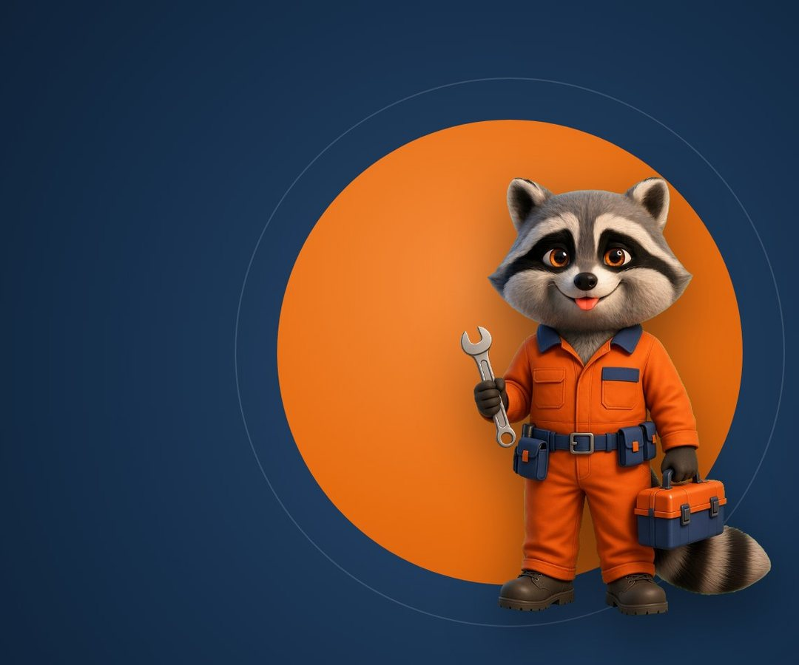
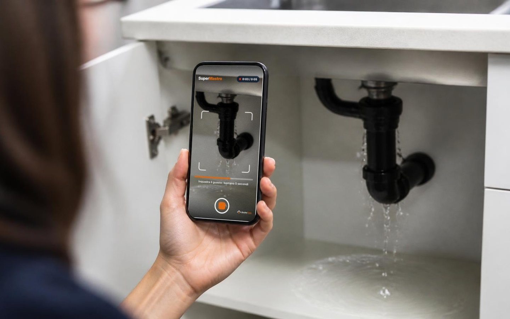
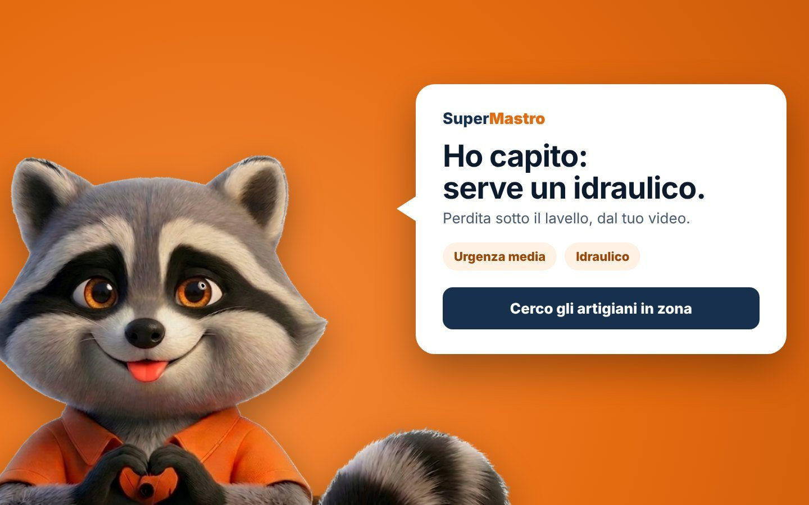
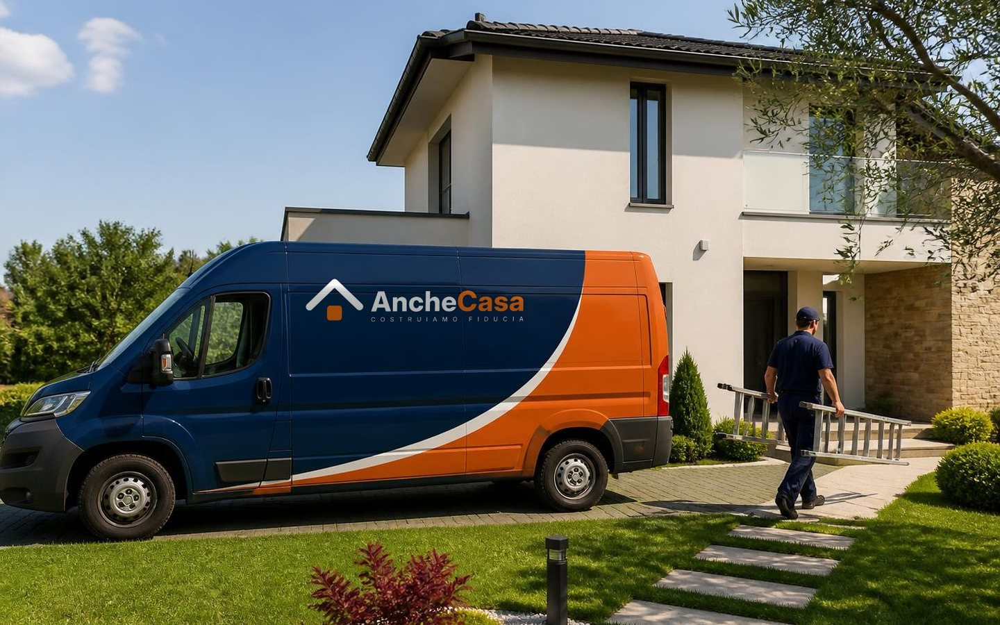
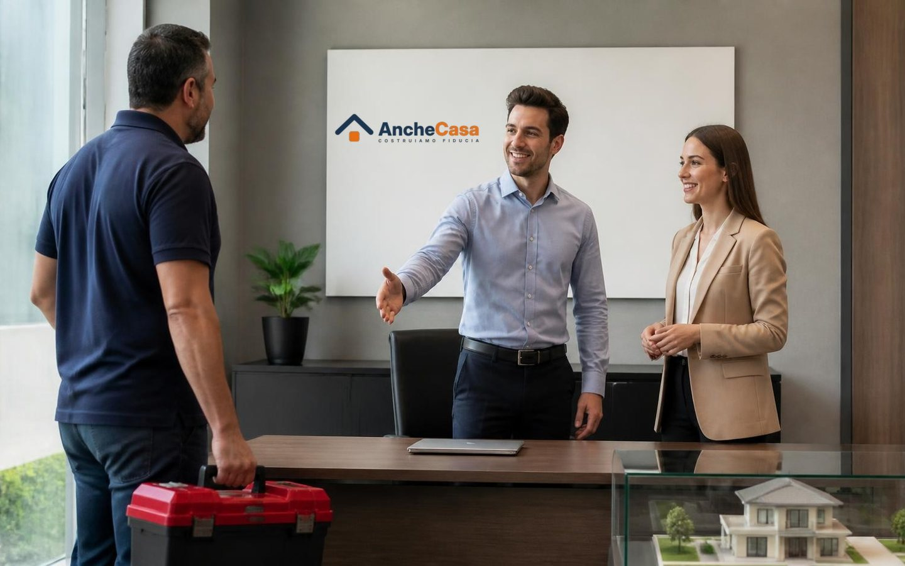

SuperMastro · un servizio AncheCasa
Scatta, invia,
risolviamo.
Scrivi il problema o fai un video di 5 secondi. SuperMastro ti spiega come farlo da solo, con gli attrezzi giusti. Se preferisci un professionista, te lo trova sulla cartina, vicino a te.
La tua richiesta
Cosa ti serve
Come fare, passo per passo
Preferisci che lo faccia un professionista?
Il video con SuperMastro si fa dal telefono: apri anchecasa.it/supermastro sul cellulare.
Cerca artigiano
Artigiani vicino a te
In cima, con il segno blu, gli artigiani certificati DM 37/08 della rete. Gli altri vengono da OpenStreetMap.
SuperMastro
Il guasto, da qui.
Cinque secondi di video. Poi il problema, la spiegazione e, se serve, l'artigiano vicino.
SuperMastro con il video funziona dal telefono
Apri questa pagina sul cellulare, inquadra il guasto per 5 secondi e SuperMastro ti dice cos’è, come farlo da solo o chi chiamare.
Da qui puoi comunque scrivere il problema nella ricerca della home e cercare un professionista.
Inquadra il guasto e tieni fermo il telefono. La registrazione si ferma da sola dopo 5 secondi.
SuperMastro sta guardando il video.
Il video è pronto. Tocca quello che si vede: SuperMastro ti dice se puoi farlo tu e chi chiamare.
Cerco gli artigiani vicini e apro l'elenco su Google Maps.
Tre passi, dal telefono
Dal video al problema, e a chi chiamare.

Fai un video di 5 secondi
Apri SuperMastro e inquadra il guasto: rubinetto, presa, serratura, caldaia.

SuperMastro capisce
Dopo i 5 secondi dice qual è il problema e se puoi risolverlo tu, senza chiamare nessuno.

L'artigiano in zona
Se serve un artigiano, lo cerca vicino a te e ti dà l'elenco, con il pulsante per chiamare e la scheda su Google Maps.
Piacere, SuperMastro
Il mastro di AncheCasa
per i guasti di casa.
Non devi sapere come si chiama il pezzo rotto né chi chiamare. Fai vedere il problema a SuperMastro: lo spiega lui all'artigiano, con il tuo video.
- Gratis per chi chiede l'intervento.
- Chat con l'artigiano, il numero resta tuo.
- Artigiani della rete AncheCasa, vicino a te.
Per gli artigiani
Ricevi i lavori della tua zona.
- Solo il tuo mestiere, solo vicino a te.
- Sai già cosa trovi: il video e la diagnosi arrivano con la richiesta.
- Decidi tu: accetti o rifiuti, nessun obbligo.
